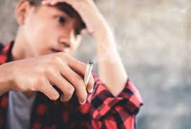
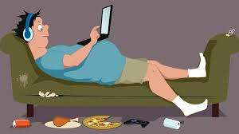
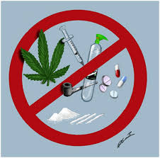

A adolescência é uma janela crítica de desenvolvimento cerebral. No Brasil, o consumo de substâncias e a obesidade são tratados como questões de saúde pública interligadas a determinantes sociais, como acesso a lazer, educação e segurança alimentar.
De acordo com o OBID, o uso de drogas no Brasil varia de experimentação esporádica a padrões de dependência grave. O consumo precoce está diretamente ligado a prejuízos no desenvolvimento do sistema nervoso central, ainda em maturação.

| Ácool | A droga mais consumida. O Binge Drinking (beber pesado episódico) é comum em festas, aumentando riscos de violência e acidentes. |
| Tabaco e Vapes | Embora o cigarro comum tenha caído, os DEFs (Dispositivos Eletrônicos para Fumar) são uma ameaça crescente, muitas vezes servindo como porta de entrada para a nicotina. |
| Canábis | Frequentemente a primeira droga ilícita experimentada. O uso precoce está associado a déficits cognitivos e evasão escolar. |
| Inalantes | Solventes e "lança-perfume" ainda possuem prevalência significativa em determinados contextos socioeconômicos brasileiros. |
O Ministério da Saúde recomenda o modelo SBIRT (Triagem, Intervenção Breve e Encaminhamento para Tratamento).
Segundo dados do Vigitel e do Ministério da Saúde, a obesidade infantil e juvenil cresceu no Brasil devido ao aumento do consumo de alimentos ultraprocessados e ao sedentarismo.

Importante: O diagnóstico no SUS não avalia apenas o peso, mas o contexto de segurança alimentar e a presença de comorbidades como Hipertensão e Diabetes Tipo 2, cada vez mais precoces.
O tratamento no Brasil é feito preferencialmente através da rede RAPS (Rede de Atenção Psicossocial), com destaque para os CAPSij (Centros de Atenção Psicossocial Infantojuvenil).
|
 |
1. Ministério da Saúde / gov.br BRASIL. Ministério da Saúde. Secretaria de Atenção Primária à Saúde. Guia Alimentar para a População Brasileira. 2. ed. Brasília: Ministério da Saúde, 2014. Disponível em: https://www.gov.br/saude/pt-br/assuntos/saude-brasil/publicacoes-para-promocao-a-saude/guia_alimentar_populacao_brasileira_2ed.pdf/view
BRASIL. Ministério da Saúde. Linha de Cuidado do Sobrepeso e da Obesidade na Adolescência. Brasília: Secretaria de Atenção Especializada à Saúde, 2022. Disponível em: https://www.saude.pr.gov.br/sites/default/arquivos_restritos/files/documento/2022-06/linha_de_cuidado_sobrepeso_e_obesidade_diagramada_final.pdf. Acesso em: 9 mar. 2026.
2. OBID (Observatório Brasileiro de Informações sobre Drogas) BRASIL. Ministério da Justiça e Segurança Pública. Secretaria Nacional de Políticas sobre Drogas (SENAD). Relatórios e Dados Estatísticos sobre o Consumo de Substâncias no Brasil. Brasília: OBID, 2024. Disponível em: https://www.gov.br/mj/pt-br/assuntos/sua-protecao/politicas-sobre-drogas/obid. Acesso em: 9 mar. 2026.
3. Cria Prevenção (Plataforma de Evidências) CRIA PREVENÇÃO. Metodologias de Prevenção Baseadas em Evidências: Programas #Tamojunto2.0, Famílias Fortes e Elos. Brasília: Ministério da Saúde/FIOCRUZ, 2024. Disponível em: https://criaprevencao.com.br. Acesso em: 9 mar. 2026.
CRIA PREVENÇÃO. Guiando a Prevenção: Manual de Monitoramento para Gestores no Campo Álcool e outras Drogas. Brasília: Ministério da Saúde, 2023. Disponível em: https://criaprevencao.com.br. Acesso em: 9 mar. 2026.